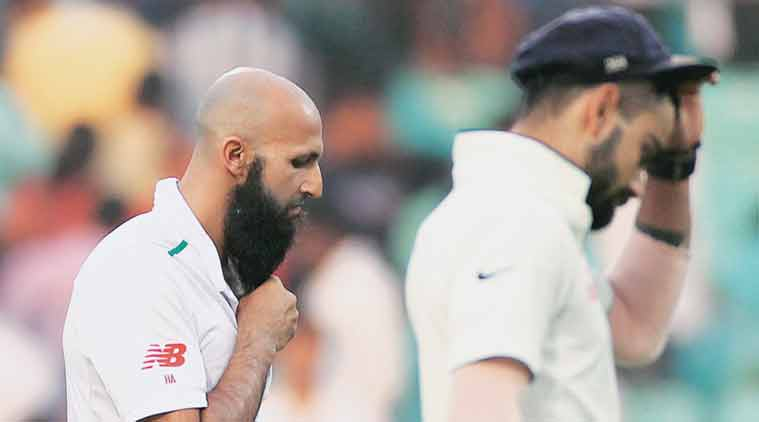
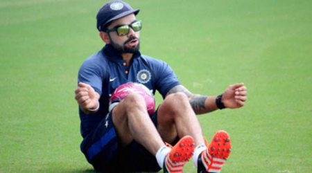

Hashim Amla and Virat Kohli walk back after Day One of the Third Test in Nagpur. India nosed ahead with two wickets after being dismissed for 215 in their first innings. (Source: AP)One hour into the game, a man in crisp blue shirt tucked into black trousers, ran out to the middle with a broom in his hand. He headed straight to the umpire Ian Gould who pointed his fingers to the sand pit below. The man knelt down, the broom swished furiously and dust swirled up and away, and debris greased the broom. The pitch at Jamtha, in the outskirts of Nagpur, had indeed turned out to be a “beach”, soaking up all the day’s attention.
Sometimes, a day at cricket can throw up aural memories. A piece of sound that stays with you. Often, it comes from the action in the middle, but sometimes produced by oneself. Wednesday brought out a cackle. A here-we-go-again kind of chuckle at the pitch and at South Africans’ woes – an impertinent and harsh laugh, maybe, but an unsurprising, and honest, emotion. A day where it seems almost dishonest to have an open mind and expect South Africans to surprise us on Day two.
All the odds are stacked against them. A bruised pitch whose powdery cover has already withered, revealing a rough sandpit where even the agencies that do ridiculously faulty exit polls for Indian elections can get the verdict right: a quick, painful finish. South Africa would hope AB de Villiers and Hashim Amla can pull off a heist and it would make for an exhilarating watch, but either way, regardless of the team that goes down, the end feels already within handshaking distance.
- Lost and found: Ajinkya Rahane at home
- Victory dampener: ICC rates Nagpur pitch ‘poor’
- Ind vs SA, 3rd Test: India sniff win after 20-wicket day in Nagpur
- Ind vs SA, 3rd Test: Whichever side adjusts to wicket will have better chance of winning: Sanjay Bangar
- Ind vs SA, 3rd Test: India hit back after South Africa spin web
-

India searching for settled combination
Vijay the exception
It was also a day where the young Indian batsmen continued to show how out of place they can look in certain home conditions. Someone like M Vijay continues to be an exception. The frequent shimmy down the track, the decisive press-back, and the twirling wrist to douse the fiery turning deliveries were on display but he fell to South Africa’s best bowler of the day.
It was Morne Morkel who sparkled with his reverse swing, an art that usually cues up dramatic and thrilling visuals but his was a cerebral show. Often, he had the shiny side of the ball on the outside and got it to either straighten or wobble away.He took out three top-order batsmen, each of which deserves a few peeks at the highlights reel. Vijay fell to a delivery that landed around off stump and hit his pad in front of the middle but the angle of release and the anticipation had set him up for a nip-backer. Instead, it started to hold its line in the end, squaring-up Vijay who was pinged on his back pad.
It was the afternoon spell, though, when Morkel really began to harass the batsmen. The set-ups were a tease, an obvious but inescapable trap. Ajinkya Rahane must have known what was coming. All through the period when the ball kept tilting away from him, somewhere in his mind, he would have known one was going to dart in. Will it be this one, or the next and then when it eventually came, it felt like an unsurprising end. One of the thrilling slow-motion replays had perfectly captured Morkel’s skill. Just before the release, there was a whip of the wrist, a deliberate skilful snap that gave the ball its direction. It was a full delivery but not Pakistani-full, not those classic booming inswinging crushers, but more modern in its scope. There was still some way to go after landing to make it more like a seaming delivery than a swinging one. Enough time and movement for Rahane to panic and come up with a despairing waft. If it was any fuller, he might have stabbed it out. There wasn’t much celebration from Morkel, just an exhale of air as he passed the batsman.
Morkel masterful
The plan against Kohli was even simpler. Just keep taking it away. With a ‘thank you, come again’ kind of finish. Kohli has this tendency to keep stretching across, pushing his bat well in front of the body. The ball rushed past the outside edge a few times before Morkel made an adjustment that must have given him great satisfaction. It was another delivery that tailed away with the shiny side but this one was that bit fuller. The reverse of what he did with Rahane. There wasn’t much time for Kohli to stop the forward thrust of the wrist and hold the bat inside the line; this one kissed the wood en route to the keeper. The afternoon spell read 4-2-8-2, and it was in fact 2.2-1-4-2 at one point.
All through it, though, and especially afterwards, as the Indians slowly inched ahead, it was difficult to shake off thoughts about what lay in store for South African batsmen. Indians though had to stay in the present and first put up a decent total which they did courtesy a gritty knock from Wriddhiman Saha, who as Sanjay Bangar, India’s batting coach, later said, “put a price on his wicket”, and a intelligently breezy knock from Ravindra Jadeja, who didn’t waste any run-scoring opportunity.
The mini-drama began when the Indian innings ended, giving nine nervy overs to South Africa. After wasting two overs with Ishant Sharma, the real deal began. Ashwin and Jadeja in tandem – curling and looping offbreaks, and skidding, rushing mix of straight ones and occasional left-arm breakers. A most traditional off break, that had flight and turn, was enough to dispose van Zyl and when the South Africans sent in Imran Tahir as a human sacrifice, Jadeja knocked the off peg. And that cackle began.
Nagpur Nuggets
Tahir, Specialist of a different kind
It’s interesting to see how Imran Tahir is used by South Africa. For a frontline spinner, he is the last person that Hashim Amla turns to. It seems he is there just to knock out the tailenders with his slew of googlies, like he did in Mohali. In Nagpur, Simon Harmer, who said he was told on Tuesday afternoon that he would play as the second spinner, was the chosen to bowl at the top order. It was easy to understand why as Tahir seemed intent on taking the pitch out of equation with his full-tosses and over-pitched tripe. It also made one wonder whether the state of affairs (of being used largely to remove lower-order batsmen) could also be because of his captain’s lack of trust in him. The onus, though, must rest with Tahir for his bowling has been very ordinary. When the likes of Dale Steyn, Philander and Morne Morkel are on song, Tahir can be a useful with his googlies at the lower order, but on tracks such as Nagpur, Tahir needs to do a lot more than just turning up.
Gone are the days of Drinks trolley
The drinks trolleys used to be quite a spectacle in the 90s. Something that the marketing companies used to love. Elaborately designed trolleys would be pushed out. A huge bottle of cola, or a big football. It amused the crowd and even TV channels would spend some footage of players crowding these weirdly shaped things. Nowadays, they are not in fashion. No player drinks from them as each team sends out their own refreshments and even the umpires hardly drink from the trolley.
A Question of Pace
As a spinner he was happy with the pitch, but Simon Harmer also revealed the difficulties he faced on designer spin tracks. Unaccustomed to such pitches, he said it was the search for the ideal pace that he found most trouble with. To be quick or slow, or be somewhere in the middle was the question that ailed him for the first half of the day. “I think I was a bit slow at the beginning of my spell. Pace on this wicket was vital. Obviously you can’t bowl one pace the whole time. But I felt that the quicker pace there was a bit more bite off the wicket. You saw a few balls spit. When you bowl too slowly, a batsman can adjust.” And he found the ideal pace when he trapped Pujara on the back foot with the one that rushed in after landing.
Fuss about the pitch
Simon Harmer, who wouldn’t have played had the pitch not been a turner, wasn’t going to point any accusatory finger at the state of the track. Instead, he chose to be pragmatic and preferred to dwell on how teams all over create home advantage. “I don’t think the wickets are prepared to last five full days. It’s about producing a result. When the Indian team comes to South Africa, we are going to prepare wickets that suit our bowlers. So them playing one seamer, it’s clear to see what sort of wicket they are preparing.”